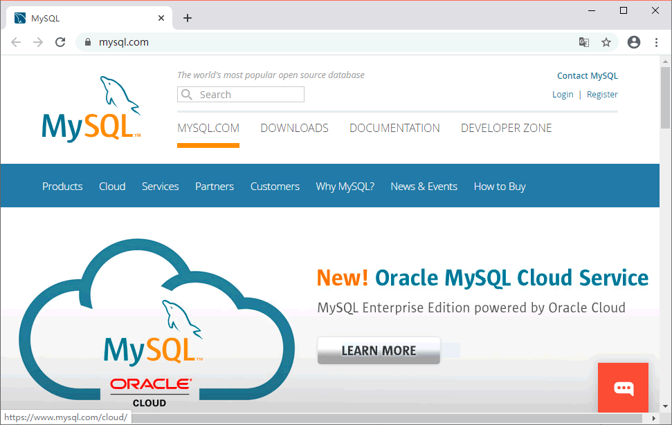
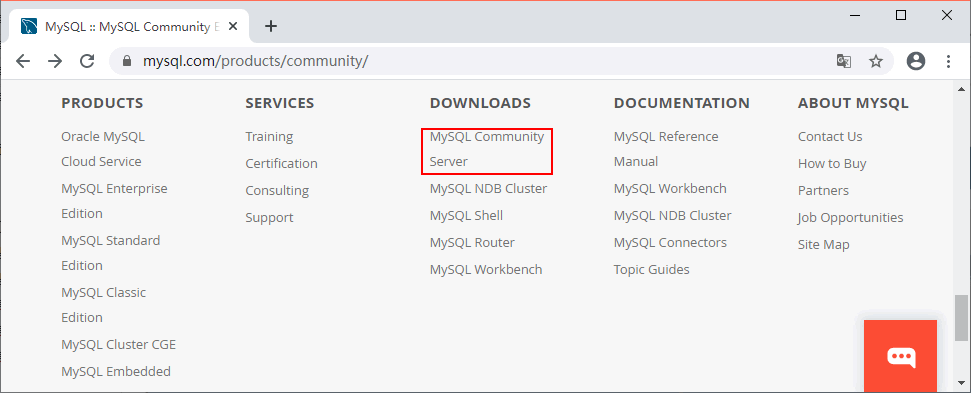
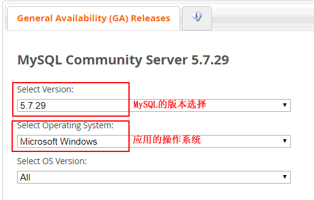
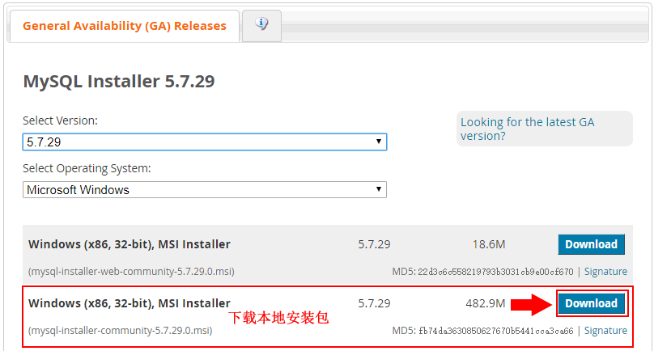
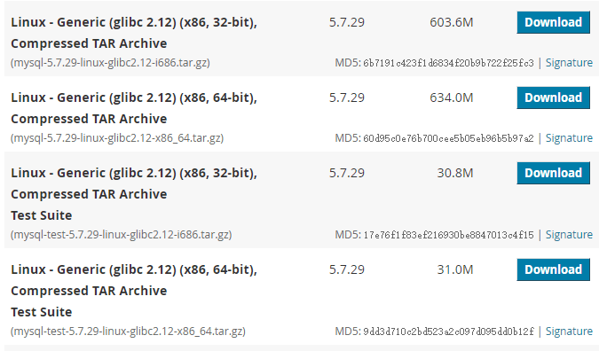
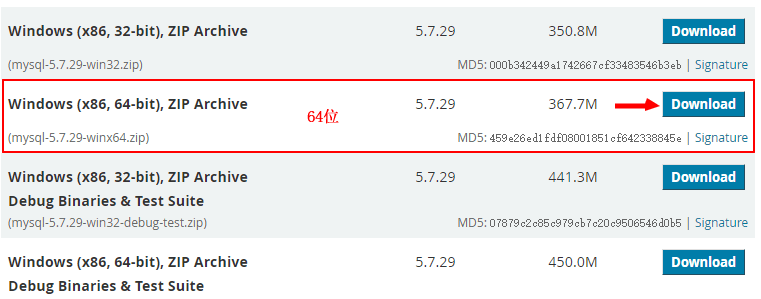
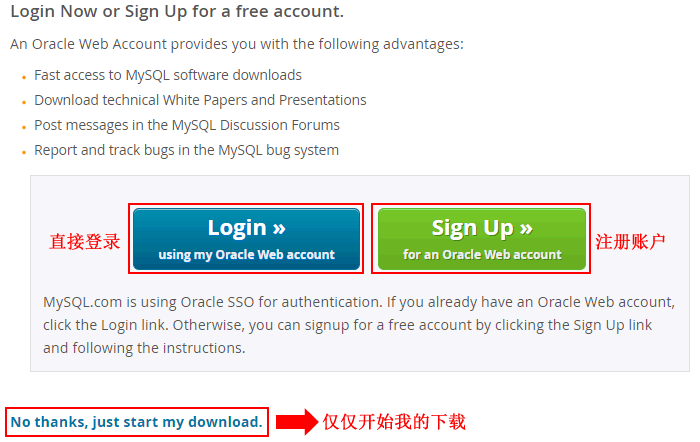

首页 > MySQL教程 > MySQL的安装和配置
MySQL下载步骤详解
对于不同的操作系统，MySQL 提供了相应的版本。在 Windows 操作系统下，MySQL 数据库的安装包分为图形化界面安装和免安装这两种安装包。这两种安装包的安装方式不同，配置方式也不同。图形化界面安装包有完整的安装向导，安装和配置很方便。免安装的安装包直接解压即可使用，但是配置起来不方便。
本节主要介绍了 MySQL 的下载和安装过程，用户可以根据自身的操作系统类型，从 MySQL 官方下载页面免费下载相应的服务器安装包。本教程以 MySQL 5.7.29 为例介绍其在 Windows 10 操作系统下的安装和配置过程。
用户下载安装包的步骤如下，包括下载 Windows 图形化 MySQL 安装包、Windows 免安装 MySQL 安装包以及 Linux 操作系统的 MySQL 安装包。
步骤 1)：打开 MySQL 官方网站（http://www.mysql.com），如图 1 所示。
步骤 2)：滑到网页底部，点击 DOWNLOADS 列表下的 MySQL Community Server，如图 2 所示。
选择后点击后面的 Download 进行下载，如图 4 所示。
步骤 4)：点击 Download 后进入下载页面，该页面需要注册 MySQL 账户，也可不进行注册，直接下载，如图 7 所示。
注意：一般来说应当使用二进制分发版，因为该版本比其他的分发版使用起来更简单，不再需要其他工具来启动就可以运行 MySQL。
最后，我们直接给出 MySQL 的官方下载地址：https://dev.mysql.com/downloads/mysql/
由于篇幅有限，我们在《MySQL安装教程》一节讲解 Windows 和 Linux 平台的安装，请点击《MySQL安装教程》继续阅读。
本节主要介绍了 MySQL 的下载和安装过程，用户可以根据自身的操作系统类型，从 MySQL 官方下载页面免费下载相应的服务器安装包。本教程以 MySQL 5.7.29 为例介绍其在 Windows 10 操作系统下的安装和配置过程。
用户下载安装包的步骤如下，包括下载 Windows 图形化 MySQL 安装包、Windows 免安装 MySQL 安装包以及 Linux 操作系统的 MySQL 安装包。
步骤 1)：打开 MySQL 官方网站（http://www.mysql.com），如图 1 所示。

图 1
图 1
步骤 2)：滑到网页底部，点击 DOWNLOADS 列表下的 MySQL Community Server，如图 2 所示。

图 2
图 2
下载Windows操作系统图形化MySQL安装包
在下载页面中，选择 MySQL 的版本和操作系统，这里操作系统选择 Microsoft Windows，如图 3 所示。

图 3
图 3
选择后点击后面的 Download 进行下载，如图 4 所示。

图 4
图 4
下载Linux操作系统MySQL安装包
同样对于在 Linux 系统下安装 MySQL 数据库管理系统，用户可以将图 3 的操作系统改为 Linux-Generic 操作系统，如图 5 所示，根据自己的 Linux 系统下载相应的版本即可。

图 5
图 5
下载Windows操作系统免安装MySQL安装包
如果用户需要使用免安装的 MySQL，可以在官方网站下载免安装的 MySQL 压缩文件，如图 6 所示。

图 6
图 6
步骤 4)：点击 Download 后进入下载页面，该页面需要注册 MySQL 账户，也可不进行注册，直接下载，如图 7 所示。

图 7
图 7
注意：一般来说应当使用二进制分发版，因为该版本比其他的分发版使用起来更简单，不再需要其他工具来启动就可以运行 MySQL。
最后，我们直接给出 MySQL 的官方下载地址：https://dev.mysql.com/downloads/mysql/
由于篇幅有限，我们在《MySQL安装教程》一节讲解 Windows 和 Linux 平台的安装，请点击《MySQL安装教程》继续阅读。
关注公众号「站长严长生」，在手机上阅读所有教程，随时随地都能学习。内含一款搜索神器，免费下载全网书籍和视频。

微信扫码关注公众号